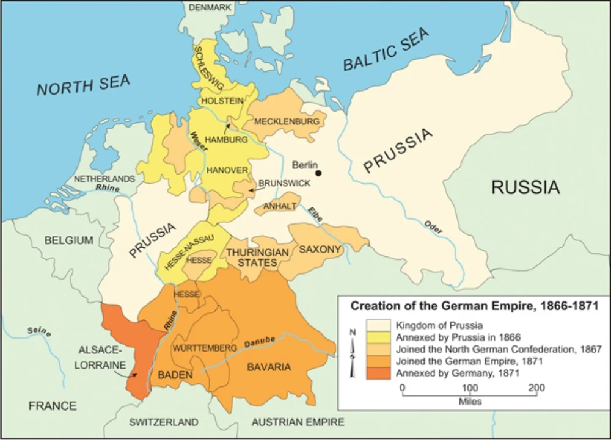
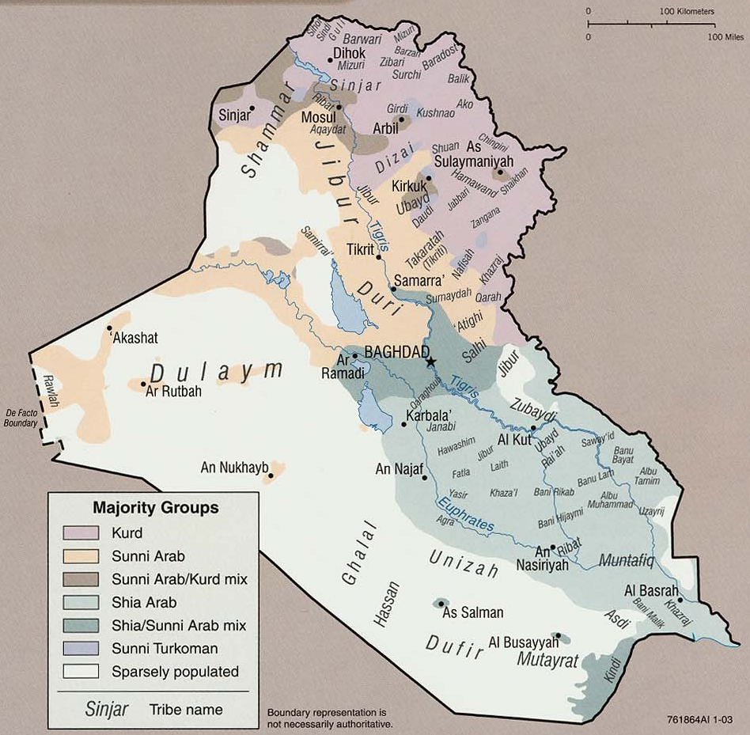
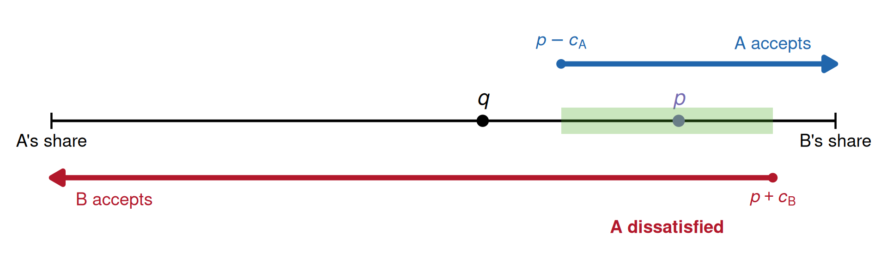

PSCI 2227: War and State Development
March 30, 2026
Last time. Nationalism as a political ideology
Today. Sambanis, Skaperdas, Wohlforth, “Nation-Building through War.”
If people don’t identify with the nation, how do they identify?
One alternative: sub-national identity
Another alternative: identities that don’t correspond to borders
Nation-state’s challenge: make nationalism more appealing than alternatives

Bismarck’s challenge: how to bring the south into a German identity?

US occupation’s challenge: how to foment functioning Iraqi democracy?
When people identify with sub-national groups instead of the nation, two bad things happen from the state’s perspective:
1. Undermines public good provision
2. Fuels internal conflict
┌─────────────────────────────────┐
│ Sub-national identification │
└──────┬───────────────┬──────────┘
│ │
▼ ▼
┌────────────┐ ┌──────────────┐
│ Low state │ │ Internal │
│ capacity │◄─┤ conflict │
└─────┬──────┘ └──────┬───────┘
│ │
└────────┬───────┘
│
▼
┌─────────────────┐
│ Weaker national │
│ identity │
└─────────────────┘
States exist in a competitive, anarchic international system
Victory in war raises a state’s international status — defeat lowers it
Why does this matter domestically?
When the nation’s status rises after a military victory, the calculus of identification changes
Each group weighs:
After victory: status bonus goes up \(\Rightarrow\) more people identify nationally
Key idea in SSW: identification changes individual behavior, not just attitudes
How I think about the individual decision calculus:
| Activity | Description | Effect on the state |
|---|---|---|
| State capacity | Invest in public goods, institutions | Great for the state |
| Private production | Work for personal gain | Good — taxable |
| Conflict | Fight other groups for resources | Bad for the state |
Effects of nationalism:
Tilly’s story is essentially chronological
SSW add strategic nation-building

Remember back to the bargaining model of war
War costly \(\leadsto\) bargain available
But the “costly” assumption can break if victory builds one state, but defeat won’t break the other
Prussia’s problem: Southern German states resisted unification
Bismarck’s solution: Engineer a crisis with France
War had exactly the effects SSW’s model predicts
Result was massive state-building
Reminder. https://calendly.com/brenton-kenkel/wasd-paper-consultations
Tomorrow. My office hours, 2:00–3:30pm.
Wednesday. Read paper by Darden and Mylonas on territorial integrity and mass schooling.
Friday. Seungho’s office hours, 3:00–4:30pm.